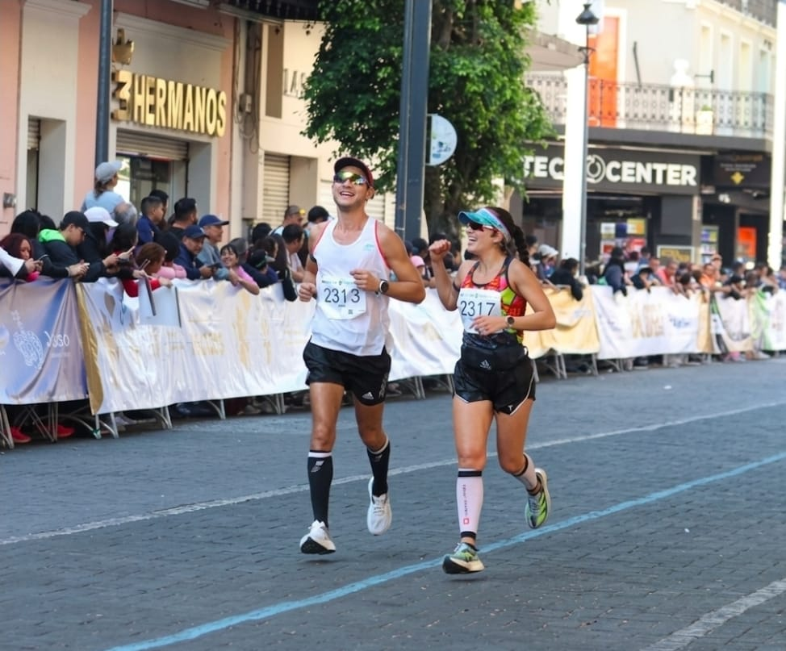
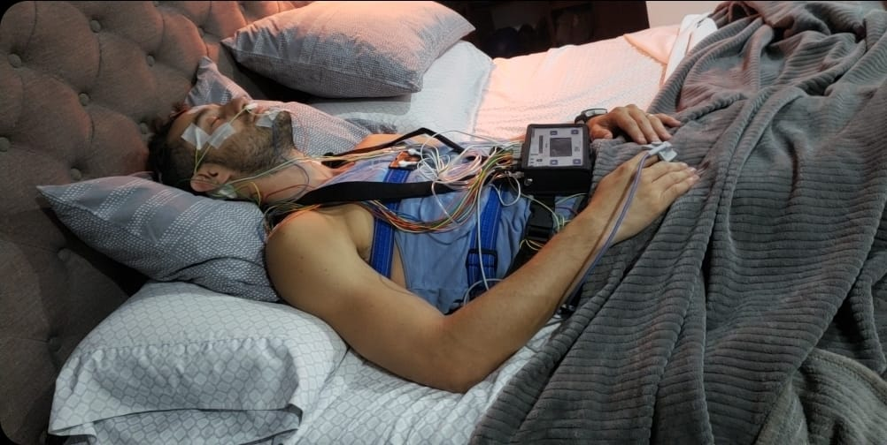

S
Sueño
Puerta de entrada
Por aquí llegan los pacientes de la Dra. Lili: ronquido, insomnio, sospecha de apnea, cansancio que no cede. Se mide, se comprende y se entrena.

El Protocolo S·E·R no es un tratamiento que recibes — es un programa que entrenas. Dos especialistas, un mismo camino: reentrenar tu sueño y tu respiración para recuperar el equilibrio de tu salud, sin silenciar el problema de fondo con pastillas o parches.
Dra. Liliana Padilla Islas · Dr. Jorge Barbachano Torres

La mayoría llega por un síntoma concreto: ronquido, cansancio que no cede, despertares nocturnos, una nariz que nunca respira bien. Ese síntoma es la puerta — no el diagnóstico.
El Protocolo S·E·R nació porque el sueño y la respiración no son problemas separados: son el mismo sistema visto desde ángulos distintos. Y porque detrás de dormir y respirar bien hay una habilidad que se puede aprender, entrenar y sostener.
No te enseñamos a depender de un dispositivo, una molécula o una cirugía. Te enseñamos a leer tu propio sistema y a entrenarlo — para hoy, y para los próximos treinta años.
S·E·R no son tres áreas paralelas. Son dos entradas y un lugar al que se llega. Ningún médico es dueño de una letra — los dos vemos al mismo paciente completo, entre por donde entre.
Por aquí llegan los pacientes de la Dra. Lili: ronquido, insomnio, sospecha de apnea, cansancio que no cede. Se mide, se comprende y se entrena.
Lo que se recupera cuando el sistema completo empieza a funcionar. No es puerta de nadie — es el resultado del trabajo. Es hacia dónde te llevamos.
Por aquí llegan los pacientes del Dr. Jorge: nariz obstruida, boca abierta al dormir, respiración disfuncional. Estructura y función, siempre juntas.
"El sueño y la vigilia, cuando son inmoderados, constituyen enfermedad." — Hipócrates · siglo V a.C.
El Protocolo S·E·R se construye sobre ocho pilares. Dormir bien y Respira son dos de ellos — las puertas más accesibles y las que dan nombre al método. Los otros seis pesan igual: sin ellos, no hay equilibrio que sostener.
Se integran a tu vida real, regla del 80/20. Y cada pilar tiene una práctica y una medida — porque en el S·E·R no se recomienda nada a ciegas: se mide, se interviene y se vuelve a medir en el tiempo.
Siete pilares que se entrenan y se miden. Dormir bien y Respira son las puertas de entrada; Repite es el centro que sostiene el sistema completo.
Rutina y arquitectura del sueño.
Medimos: IAH, SpO₂ mínima, T90, eficiencia · poligrafía o PSG · Epworth
25 minutos de luz al despertar.
Medimos: anclaje fótico matutino · cronotipo
Diafragmática, nasal, pausada.
Medimos: BOLT · respiración nasal · permeabilidad de la vía aérea
Fuerza y VO₂.
Medimos: Cooper · dinamometría · FC de recuperación a 1′ · movilidad
Microbioma y balance energético.
Medimos: InBody · glucosa, insulina, HOMA-IR · perfil lipídico avanzado
Una cosa menos, cada día.
Medimos: inflamatorio (PCR-us, índice omega-3) · hepático (ALT, AST, GGT, FA)
Comunidad y mente: Escuela de Sueño, meditación y gratitud.
Medimos: variabilidad de la frecuencia cardíaca (HRV)
Hazlo fácil, accesible, satisfactorio y gratificante.
Medimos: adherencia — la métrica del programa entero
Nunca te detengas. La consistencia es la intervención. Repite cierra el círculo — no es un adorno, es lo que convierte ocho buenos hábitos en una vida distinta.
A Jorge lo buscan para respirar mejor por la nariz. A mí, para dormir mejor. Nos dimos cuenta de que trabajábamos al mismo paciente sin saberlo — así que decidimos hacerlo juntos.
Cada quien tiene su puerta. Pero una vez adentro, no te pasamos de un consultorio a otro: los dos vemos al mismo paciente completo sobre los mismos ocho pilares. Lo único que cambia entre uno y otro es el motivo de la primera cita.
 Llegas por el sueño
Llegas por el sueño
Otorrinolaringología · Medicina del Sueño
Estudios de sueño, diagnóstico de apnea y reentrenamiento de la respiración desde su función. El sueño se entrena — y ese entrenamiento es mi trabajo.
Céd. Prof. 7057757 (UAG) · Céd. Esp. 9181490 (UNAM)
 Llegas por la nariz
Llegas por la nariz
Otorrinolaringología · Cirugía funcional y estética nasal
Corrección quirúrgica de la vía aérea, precisa y guiada por datos, seguida de rehabilitación nasal — porque arreglar la estructura es apenas el comienzo.
Céd. Prof. 6151159 · Céd. Esp. 8693151 · Hospital Galenia
El Protocolo S·E·R no es un paquete cerrado ni un mismo camino para todos. Es un programa que avanza por fases: empezamos por donde tus datos piden primero y sumamos el siguiente paso solo cuando la evidencia lo justifica.
Algunos vienen por un estudio de sueño y ahí termina lo que necesitan. Otros descubren que su historia es más larga. Tú decides hasta dónde — nosotros te mostramos el mapa.

Se mide, se interviene y se vuelve a medir.
El Protocolo S·E·R avanza por fases, y no las recorres solo: desde tu primera cita entras a la comunidad de la Escuela de Sueño. Cada fase tiene un propósito, algo que te llevas y un momento para volver a medir.
Entras por lo que hoy te trae.
Desde tu primera consulta no entrenas solo: en la Escuela de Sueño hablamos de sueño y respiración cada semana, con gente que entrena lo mismo que tú.
Entrar a la comunidad →Antes de la cita llenas tu cuestionario. En consulta revisamos tu historia completa y, en persona, tu nariz y tu garganta. Pedimos solo los estudios que cambian una decisión: sueño, laboratorio o composición corporal.
Te llevas: tu hoja del Protocolo S·E·R con cuatro cosas que puedes empezar hoy y, con tus resultados, tu documento PROTOCOLO SER: la interpretación de tus estudios y tu plan por fases.
Con tus resultados en la mano empezamos por lo que tu caso pide primero: el tratamiento que corresponda —hábitos, CPAP o cirugía de nariz, según tu caso— y el entrenamiento de tu cuerpo.
Te llevas: una revaloración con tu registro de sueño y tu plan ajustado.
Volvemos a medir lo que se mueve y lo comparamos contra tu punto de partida. Con eso ajustamos tus horarios, tu alimentación y, solo si un número lo justifica, tus suplementos.
Te llevas: la comparación contra tu inicio y tu documento actualizado.
Lo que ya entrenaste se sostiene. Aquí el trabajo es la respiración, la meditación y la gratitud, con la comunidad para no hacerlo solo.
Te llevas: revisiones periódicas. Si algo cambia, regresas a la fase que toque.
Los tiempos son una guía: la fase la deciden tus datos, no el calendario. Y todo lo que te proponemos en cada fase es una recomendación: la decisión final es tuya.
En medicina convencional un resultado es "normal" o "anormal". En medicina funcional y de longevidad hay un tercer punto: tu óptimo — el rango donde no solo no estás enfermo, sino donde rindes, te recuperas y envejeces mejor. Ahí es donde leemos tus datos.
Eficiencia, apnea, oxigenación, cómo se repara tu cuerpo mientras duermes. El dato objetivo detrás del cansancio.
BOLT, patrón, permeabilidad nasal, estructura y función de tu vía aérea. Estructura y mecánica, siempre juntas.
Composición corporal, fuerza, VO₂max, HRV, cómo responde tu corazón al esfuerzo y al reposo.
Metabólico avanzado, inflamación, perfil hepático, marcadores hormonales — leídos hacia la longevidad, no solo hacia el diagnóstico.
Cada dato lo traducimos a algo que puedes entrenar. Ese es el corazón del protocolo.
Un psiquiatra necesita saber cómo duerme su paciente. Un neurólogo pediatra, también. Un internista, un cardiólogo, un endocrinólogo: todos tratan pacientes cuyo sueño determina el resultado de su tratamiento, y casi ninguno tiene forma de medirlo.
El Protocolo S·E·R se llama así porque nosotros entramos por esas puertas — pero su uso no depende de la puerta. Cualquier colega puede aplicarlo con sus pacientes desde su propio eje sin dejar de ser quien lleva ese caso.
Buena parte de la maestría que hemos adquirido no se queda en el consultorio: la compartimos en comunidad y en herramientas que puedes usar hoy, gratis, empieces o no un tratamiento con nosotros.
No necesitas saber todo lo que te pasa para dar el primer paso. Elige la puerta que reconoces — nosotros nos encargamos del resto.
Cansancio, ronquido, insomnio, sospecha de apnea. Empieza con una consulta o un estudio de sueño.
Agendar con la Dra. Lili →Nariz tapada, obstrucción, cirugía funcional o estética de nariz. Valora tu caso con el Dr. Jorge.
Agendar con el Dr. Jorge →Sueño, respiración y rendimiento como un solo sistema. El Protocolo S·E·R completo, por fases.
Escríbenos por WhatsApp →Todavía no buscas consulta, pero quieres entender tu sueño. Únete a la comunidad.
Entrar a Escuela de Sueño →Consulta, estudio de sueño, cirugía de nariz o el programa completo. Empieza por donde estés — y si dudas cuál es tu puerta, escríbenos y lo definimos juntos.
Videoconsulta o presencial en Cancún. ¿Prefieres escribir? Contáctanos por WhatsApp.